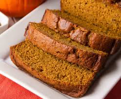

Pumpkin Bread

What're We Making?
This is the recipe for pumpkin bread that my Grandma used to make.
This bread is very moist, sweet, and almost cake-like in texture. One of my all-time favorite fall treats.
Ingredients
- 3 Cups of Sugar
- 1 Cup of Oil
- 4 Eggs
- 1 tsp of Nutmeg
- 1 tsp of Cinnamon
- 1 tsp of Baking *Soda*
- 1 1/2 tsp of Salt
- 2 Cups of Canned Pumpkin
- 2/3 Cup of Water
- 3 Cups of Flour
- 1/2 tsp of Baking *Powder*
Directions
- Preheat oven to 350 degrees. Grease your desired pans, with either butter or shortening, and set aside.
- Don't use aerosol pan lube, it will cause the bread to stick to the pan (no bueno).
- Combine the sugar, oil, eggs, nutmeg, cinnamon, and salt together in a bowl. Beat well.
- Add the remaining ingredients and mix until well combined.
- Pour the batter into your prepared pans, and bake at 350 for an hour (if you are making big loaves). Your bread is done when you can put a fork in the middle and it comes out clean.
- Allow bread to cool for 15 minutes in the pan, then transfer on a rack to finish cooling
- Serve with your toppings of choice! Enjoy!